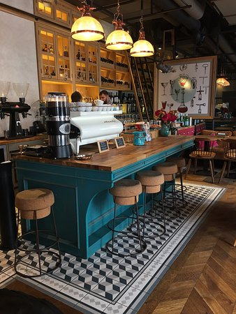
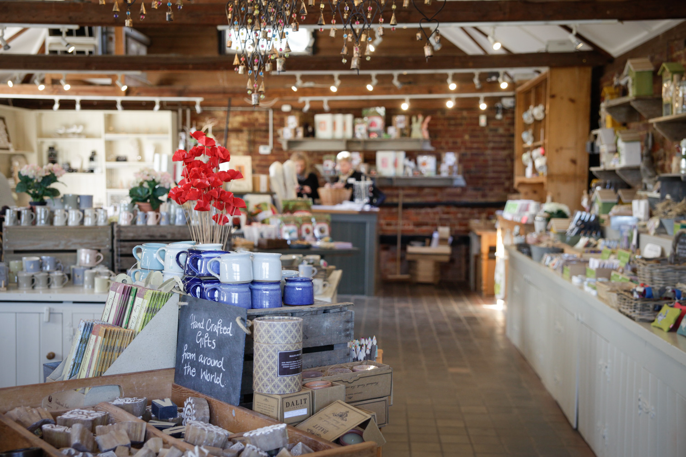
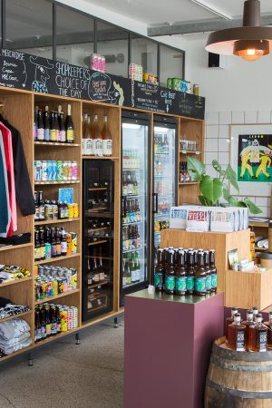
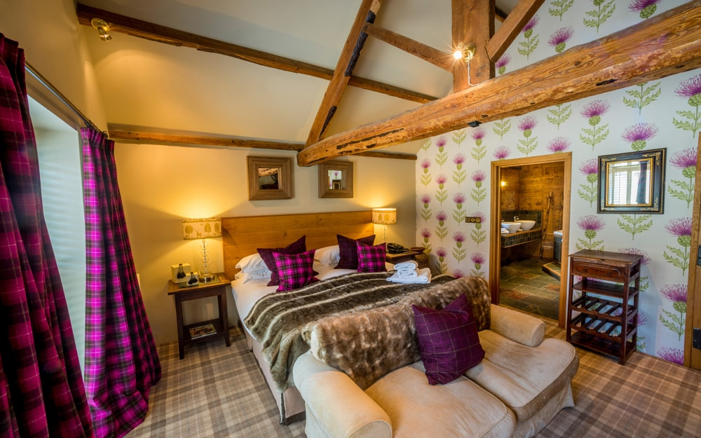

Tearoom
Inspired by the desire to enjoy an exquisite afternoon tea in the heart of the beautiful North Tyne Valley, our warm and friendly team at Chollerton Tearooms await every customer with open arms. There are freshly prepared sandwiches, cakes and treats – all individually made in house with flavours and fillings hand picked by our team of Chefs, all waiting for you to enjoy.
Craft Shop
Our craft shop is the only place to find all your craft materials, art supplies, and craft workshops under one roof. If you are a dab hand at sewing our jam-packed list of the best Craft Shops in the UK is perfect for finding those all important bits and pieces and trustworthy tools. Whether you are looking for yards of fabric or simply a length of vintage ribbon to beautify your bouquet, we have you covered.
General Store
We prepare all of our food from scratch, and what we can’t, we source locally and responsibly. We slow cook our corned beef, bread and season our fried seafood and vegetable dishes, and make all of our dressings and sauces. Through the Puget Sound Food Hub, we source local, organic cheese, meat, and produce from Samish Bay Cheese, North Cascade Meats, and numerous other on and off-island farmers. We take pride in the amazing abundance of the place in which we live and make it our work to sustain it

Post Office

We offer a fantastic post office service here at Chollerton Tearooms. Being the main post office in Chollerton for over 20 years now, we have plenty of experience in making sure your post is safe, secure and delivered on time. We offer postage on parcels of all sizes up to 50kg and competetive rates. The post office is open from 6am until 5pm everyday apart from Sundays.

Bed and Breakfast
The Bed & Breakfast here at Chollerton Tearooms is rated as the highest in the large local area. If you're looking to enjoy a romantic weekend in the countryside, or enjoy the local hike paths, theres no better place to rest your head during your stay. Our Bed & Breakfast, combined with our other services, will provide you with the perfect holiday.